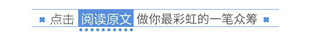

涂鸦活动 | 瓜瓜的心里话&涂鸦小预告
酷儿论坛小伙伴们
酷儿论坛
2017-06-08
酷儿论坛

motss2002
杭州酷儿论坛（motss.info）致力于为杭州及周边地区学生性少数人群提供一个多元、健康、平等的环境，促进自我认同和社会认可。
从2007年的第一次涂鸦活动开始到今年
酷儿论坛的涂鸦已经是迈向第十个年关了
在即将迎来的新一年涂鸦之际
我们很高兴将把这些 💗
心里话
分享给大家
#
还有更多神秘元素等你来与我们一同「拥抱」#
为了让
酷儿论坛
≠
浙大
这个标签广而告之，我们先后选择了下沙和浙工大屏峰校区作为我们的涂鸦场地。让人感动的是，即使我们跑离所谓的主场，可爱的你们仍然愿意与我们一同。尽管前两次正式的活动都会伴随着降雨，然而即将开始的第三次也不例外（苦笑）。
第一次紫金港先行版试涂由于一些沟通的问题，导致到场的小伙伴比较少，那次我们硬是画到了凌晨。在画的过程中，我们几个在场的人都画到了几近绝望。所以在正式活动时看到大家面对恶劣天气三俩撑伞而来的场面，我们都按捺不住心中的感动了。在涂鸦活动中我们更喜欢用「拥抱」去定义可爱的你们的赴约。是大家汇聚而成「拥抱」的力量共同孕育出了我们的“孩子”。
每一次的活动，我们也在寻求着自身的进步，也在珍惜着和可爱的你们的情谊。在活动的举办方式上也有自己的反思和提高。为了让每一位参与活动的你们感受到更多的快乐并避免尴尬的等待，我们便在第二次活动开始前先做好铺底和打稿工作，迎接大家的到来，今年也无不例外。
虽然我们的“孩子”由于各种不可抗力，现在只有下沙的还健存着。但是我们相信，我们会有更多「拥抱」的奇迹。 你们也相信，不是吗？
# 所有信息以活动群内发布为准喔 请大家动动小手指 #

长按二维码向我转账
“”

受苹果公司新规定影响，微信 iOS 版的赞赏功能被关闭，可通过二维码转账支持公众号。
微信扫一扫
关注该公众号
关注该公众号
使用小程序